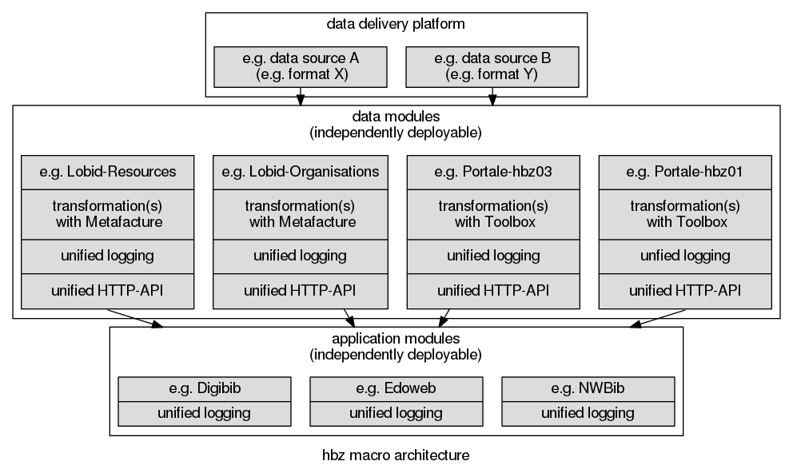

The hbz library service centre (Hochschulbibliothekszentrum des Landes Nordrhein-Westfalen) is a service and development agency for library and information systems. We are a federal state authority under the Ministry of Innovation, Science and Research of the German state of North Rhine-Westphalia (NRW). We build software to create, transform an publish bibliographic data. We’re increasingly creating our systems as open source software on GitHub: https://github.com/hbz
The source for this document is maintained at https://github.com/hbz/hbz.github.com
Common architecture
At hbz, we’re aiming to establish a common macro architecture to enable interoperability of data and application modules developed by different groups. The main idea of that macro architecture is to provide independently deployable, self-contained modules that communicate over HTTP.
Macro architecture
The goal of the macro architecture is to provide a level of integration for heterogenous software components, written in different languages and using different technologies. Not all current components conform to the architecture, and not all are open source. For an overview, see the following diagram.

Micro architecture
The micro architecture of the individual modules is not mandated on an organisation-wide level.
For a sample micro architecture, see the Lobid micro architecture (which uses Metafacture for data transformations) below.
Data modules
Some data modules that are available on GitHub are described below.
lobid
macro-data micro-1.0
The lobid repo is the implementation of the current lobid service. It roughly conforms to the common macro architecture for data modules (it provides a JSON-LD API) and is based on the initial Lobid 1.0 data module micro architecture (see below for details).
lobid-organisations
macro-data micro-2.0
https://github.com/hbz/lobid-organisations
The lobid-organisations repo is a replacement for the lobid-organisations part of the current Lobid service. It contains additional data (DBS) and conforms to the common data module macro architecture and is the reference implementation for the new Lobid data module micro architecture (see above for details).
mabxml-elasticsearch
macro-data micro-2.0
https://github.com/hbz/mabxml-elasticsearch
The mabxml-elasticsearch repo contains a complementary part of the current Lobid service. It roughly conforms to the common data module macro architecture and the Lobid data module micro architcture (provides an HTTP API via direct access to Elasticsearch).
Application modules
Some application modules that are available on GitHub are described below.
NWBib
macro-app micro-app
NWBib is the official regional bibliography for the German state of North-Rhine Westfalia. It is implemented as an application on top of the Lobid API and is the reference implementation for the Lobid application module micro architecture (see above for details).
Edoweb
macro-app micro-mix
Edoweb predates the hbz GitHub organisation. Its repos can be found in the https://github.com/edoweb organisation. It is implemented as an application on top of the Lobid API, conforming to the application module macro architecture. Its micro architecture is a mix of components that conform to the Lobid micro architecture (Elasticsearch, Playframework) and a Drupal-based UI.
OER world map
macro-mix micro-mix
https://github.com/hbz/oerworldmap
In 2014, hbz has developed a prototype for an OER world map, funded by the Hewlett Foundation. The prototype is self-contained, and does not use any data modules in our macro architecture. It’s data micro architecture is a mix of Lobid 1.0 style transformations (Metafacture crafting N-Triples), indexing (generated, non-nested JSON-LD in Elasticsearch) and API (Playframework). The UI is based on Drupal.
In 2015, hbz and Felix Ostrowski will implement a productive version of an OER world map, again funded by the Hewlett Foundation.
Lobid

macro-data micro-1.0
Lobid is hbz’s Linked Open Data service.
The code that generates the data provided by Lobid can be found in the https://github.com/lobid/lodmill repo (the open sourcing of the work on Lobid predates the http://github.com/hbz organisation page which we use to host new repos, and was made available under the http://github.com/lobid organisation page). For information on the Lobid data workflow see the included readme file. Our goal is to replace lodmill with individual data modules conforming to the common hbz macro and Lobid micro architecture (see below for details).
The code that implements the web API for Lobid can be found in the https://github.com/hbz/lobid repo. For information on the Lobid data workflow see the included readme file.
Lobid API 1.x
With increasing usage, we realized that the implementation of Lobid has several issues that we started adressing in new modules and their repos.
Monolithic appraoch
All data sets are handled in a single repo, resulting in complected code. Classes for one dataset transformation are used in others, meaning developers have to grasp the complexity of all datasets before being able to work on and extend the code. Continuous integration runs a lot of untouched parts with every change, resulting in long build times.
Complex workflow
Our workflow involves many processing steps, including Hadoop. Hadoop has turned out as not ideal for our use case, as we are using a map file to share state between processes (see the https://github.com/lobid/lodmill repo for details), which does not scale well. With a different appraoch, using Hadoop might still be an option, e.g. in the context of the https://github.com/culturegraph/metafacture-cluster repo (see below for information on Metafacture).
Generated JSON
The resulting JSON that we index in Elasticsearch is cumbersome to work with and limits usage: as it is JSON-LD generated from N-Triples, it has a serial structure of multiple, unnamed objects in an array under the
graph key, instead of nested values in a typical JSON fashion. For details, see
https://github.com/hbz/lobid/issues/1. Besides providing an inconvenient API, the format also limits our usage of Elasticsearch features: due to the non-nested structure, we cannot address specific labels in queries (like the creator’s
preferredName vs. the subject’s
preferredName). Also, as we use URIs as keys in our (generated) JSON, we cannot use Elasticsearch’s out of the box query string syntax for direct field access (URIs require lots of escaping in that context).
The general issue with the format is that it is not crafted to conform to our requirements, but instead generated from a generic RDF representation:
Lobid API 2.x
macro-data micro-2.0
Based on the issues we experienced with the first iteration of our Elasticsearch-based Web API, we are working on a revised approach, which we refer to as Lobid API 2.0. The general idea is to craft the representation that we actually deliver, that forms our API, and generate alternative representation, instead of the other way, as described above:

We have implemented this approach for the lobid-organisations dataset at https://github.com/hbz/lobid-organisations. We plan to adapt this to the current lobid-resources transformation.
Lobid micro architecture
micro-2.0 micro-app
For increased reuse, we’re trying to apply the idea of a unified macro (see above) and micro architecture to the development of new Lobid modules. For reference implementations of the Lobid micro architecture, see https://github.com/hbz/lobid-organisations (data module) and https://github.com/hbz/nwbib (application module).

Lobid data modules
Lobid data modules are implemented with Metafacture, Elasticsearch, and the Playframework. A basic idea of the Lobid micro architecture is to provide a focused, independently deployable module that does one thing: provide 1 data set, with 1 Elasticsearch index (and thus, 1 index config file), 1 build, 1 CI config, 1 README. The goal is to have a single point of entry for each of these project facets.
Lobid application modules
Lobid application modules share this general goal of a focussed module that does one thing. They should usually not require a Metafacture transformation (which suggests an additional data module), but may use an app-specific Elasticsearch index. They implement their HTTP data communication, URL routes, and HTML/JS/CSS rendering with the Playframework.
Lobid development process
This section documents how we create software in the Lobid team at hbz.
GitHub
We develop our software on GitHub. We don’t publish the results of our development process on GitHub, but instead do the actual development (track issues, change code, discuss changes) in the open. Publishing our development process in this document is part of this transparent process.
GitHub Flow
We use the simple GitHub workflow: the master branch in always in a deployable state, new features are developed in feature branches, which are merged into the master branch using pull requests. See details on the GitHub flow.
GitHub Issues
We have different Git repositories under different GitHub organisations. New repositories are created under the
hbz organisation. We use GitHub issues to keep track of requirements, new features and bugs. Bugs (i.e. defects in existing functionality) are marked with the
bug label and are prioritized over new features.
Waffle Board
For a unified view of all issues in the various repositories we us a board at https://waffle.io/hbz/lobid.
The columns of our board correspond to our development process from left to right:
Backlog
-> Ready
-> Working
-> Review
-> Deploy
-> Done
Process Stages
Backlog
The backlog contains all planned issues. They are not tagged with specific labels on GitHub. The other columns correspond to GitHub issues, i.e. moving a card from
working to
review is the same as removing the
working label and adding the
review label in GitHub.
Ready
An item is
ready if it’s possible to start working on it, i.e. there are no blocking dependencies and requirements are clear enough to start working. Dependencies are expressed through simple referencing of the blocking issue (e.g.
dependes on #111), see
details on referencing. Prioritized items (like
bugs) are moved to the top of the
ready column.
Working
When we start working on an issue, we move it to the
working column. Ideally, every person should only work on one issue at a time. That way the
working column provides an overview of who is currently working on what.
Review
When an issue is completed on the technical side, we push the corresponding commits to a feature branch that contains the corresponding issue number (and additional info for convenience), e.g.
issue-111-ui. If possible, we then deploy the changes from the feature branch to our staging system (by merging the feature branch into the master branch of the staging system, therefore simulating what will happen when we deploy to production).
We then open a pull request for the feature branch with a summary of the changes, a link to the corresponding issue, and instructions on how to test the behaviour on staging. We leave the pull request unassigned to signal to the team members that it is ready for code review. At the same time, we provide instructions on how to test the changes in the corresponding issue, and assign that to a dedicated team member (the product owner) for functional review. We finally move both cards to the
review column.
We use Travis CI for continuous integration. The CI is integrated into the GitHub review process: when a pull request is opened, Travis builds the resulting merged code and provides feedback right in the pull request (you can see the build status in the pull request preview, before submitting the pull request). For details, see this post. The developer who pushed the code should ensure the Travis build was successful before submitting the pull request for review.
Deploy
The reviewers review the code and feature or bugfix based on the provided instructions (usually links to the staging system), and provide feedback on the code or functionality. For the code review, changes to the code are created in additional commits, which the developer pushes to the feature branch. They are added to the existing pull request automatically. See
details on pull requests. At the end of the code review, the reviewer merges the pull request, and deletes the corresponding branch. At the end of the functional review, the reviewer posts a
+1 comment, moves the corresponding card to the
deploy column, and assigns it to the developer who submitted it for review, who deploys it to production.
Done
When the changes are deployed to production, we add a comment in the corresponding issue with instructions on how to replicate the change in production (usually a link to the production system). We don’t deploy to production on Fridays or before leaving for a vacation. We finally close the issue in GitHub or move it to the
done column in the board.
Conventions
Coding Conventions
We use a custom Eclipse formatter profile to ensure consistent formatting. We use custom Eclipse compiler settings to ensure consistent coding style. The settings are checked in to the repos and require no specific setup. Code that is submitted to review should contain no warnings in Eclipse. The formatting is applied automatically through Eclipse Save Actions.
Git Conventions
Git commits should be as granular as possible. When working on a fix for issue X, we try not to add other things we notice (typos, formatting, refactorings, etc.) to the same commit. Eclipse has UI for partial staging, which is very useful to keep commits focussed.
Commit Messages
We follow the established conventions for Git commit messages: imperative mood (e.g.
Fix UI issue, not
Fixes UI issue), short lines (max 72 chars), and either just one line, or one line, a blank line, and one or more paragraphs. For details, see
these
posts.
Every commit should be related to a GitHub issue. This allows us to understand why certain changes were applied. When committing to the same repo that contains the issue, it’s enough to just mention the issue number with a prefixed
# mark, e.g.
Fix UI issue (#111). If the issue is in a different repo, we have to add the full link (in a paragraph under the summary line, see above).
We don’t use the GitHub shortcuts for closing issues from commits (like
fixes #111), since in our process, the issue is not solved by the commit, but by the reviewed change, after it’s deployed to production (see above).
Metafacture

Together with the German National Library (DNB) and other members of the library community, hbz established and contributes to Metafacture, a Java-based toolkit for processing library metadata. The official repos are hosted under the Culturegraph organisation on GitHub: https://github.com/culturegraph. hbz maintains the Metafacture-IDE, an Eclipse-based IDE for working with Flux scripts (a workflow DSL provided by Metafacture) at https://github.com/culturegraph/metafacture-ide. We also maintain a fork of the metafacture core library at https://github.com/hbz/metafacture-core and provide pure Java (without Flux) sample transformations at https://github.com/hbz/metafacture-java-examples.
Eclipse

We believe that for establishing a sustainable open source infrastructure, the library world should adopt the principles described in the Eclipse Development Process to establish an open, transparent, and meritocratic community with long term support. For details see the Open Source Rules of Engagement, Open source governance: the Eclipse model and Eclipse Long Term Support. To foster this goal, hbz is a member of the Eclipse Foundation.